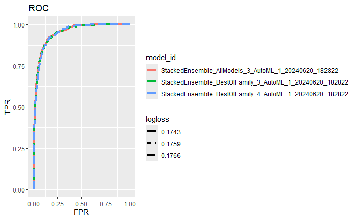
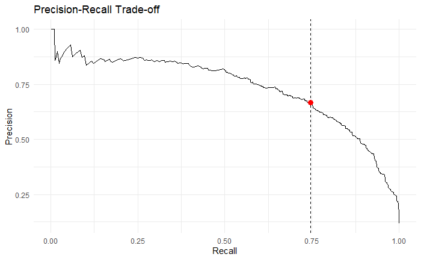
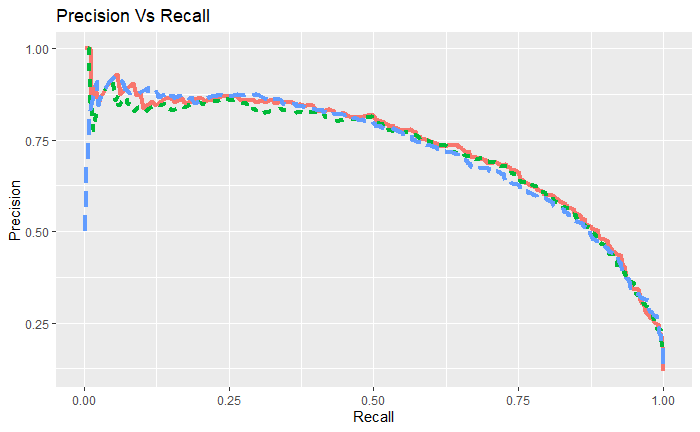
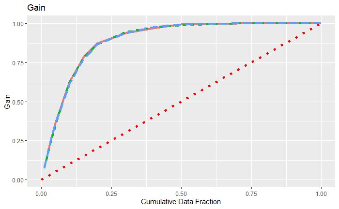
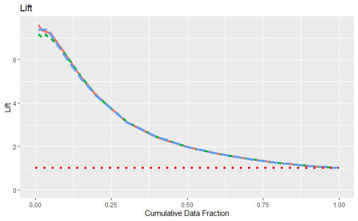

Automated ML
1 First Assignment Auto ML:
Reading data for analysis
#> Rows: 1470 Columns: 35
#> ── Column specification ────────────────────────────────────────────────────────
#> Delimiter: ","
#> chr (9): Attrition, BusinessTravel, Department, EducationField, Gender, Job...
#> dbl (26): Age, DailyRate, DistanceFromHome, Education, EmployeeCount, Employ...
#>
#> ℹ Use `spec()` to retrieve the full column specification for this data.
#> ℹ Specify the column types or set `show_col_types = FALSE` to quiet this message.employee_attrition_tbl %>%
select(Attrition, MonthlyIncome, PercentSalaryHike, StockOptionLevel, EnvironmentSatisfaction, WorkLifeBalance, JobInvolvement, OverTime, TrainingTimesLastYear, YearsAtCompany, YearsSinceLastPromotion) %>%
ggpairs(aes(color = Attrition), lower = "blank", legend = 1,
diag = list(continuous = wrap("densityDiag", alpha = 0.5))) +
theme(legend.position = "bottom"){kind=link}
I present the asnwers by Number. Answer
1.Those that are leaving have a lower Monthly Income.
It’s difficult to deduce anything based on the visualization.
Those that are staying have a higher stock option level. This is not true for the highest stock option level tho.
A higher proportion of those leaving have a low environment satisfaction level
Those that are staying have a higher density of 2’s and 3’s
Those that are leaving have a lower density of 3’s and 4’s
The proportion of those leaving that are working Over Time are high compared to those that are not leaving. (roughly 50% of those who are leaving are doing OT, vs ~25% for stayers)
It’s difficult to deduce anything based on the visualization.
People that leave tend to have less working years at the company
It’s difficult to deduce anything based on the visualization
2 Second Assignment Auto ML:
Loading, splitting train + test
#> Rows: 19053 Columns: 23
#> ── Column specification ────────────────────────────────────────────────────────
#> Delimiter: ","
#> chr (7): potential_issue, deck_risk, oe_constraint, ppap_risk, stop_auto_bu...
#> dbl (16): sku, national_inv, lead_time, in_transit_qty, forecast_3_month, fo...
#>
#> ℹ Use `spec()` to retrieve the full column specification for this data.
#> ℹ Specify the column types or set `show_col_types = FALSE` to quiet this message.back_order_data$went_on_backorder <- as.factor(back_order_data$went_on_backorder)
back_order_data$deck_risk <- ifelse(back_order_data$deck_risk == "Yes", 1, 0)
back_order_data$potential_issue <- ifelse(back_order_data$potential_issue == "Yes", 1, 0)
back_order_data$oe_constraint <- ifelse(back_order_data$oe_constraint == "Yes", 1, 0)
back_order_data$ppap_risk <- ifelse(back_order_data$ppap_risk == "Yes", 1, 0)
back_order_data$stop_auto_buy <- ifelse(back_order_data$stop_auto_buy == "Yes", 1, 0)
back_order_data$rev_stop <- ifelse(back_order_data$rev_stop == "Yes", 1, 0)split_obj <- rsample::initial_split(back_order_data, prop = 0.8)
train_tbl <- training(split_obj)
test_tbl <- testing(split_obj)
# Modeling
h2o.init()
# Split data into a training and a validation data frame
train_h2o <- h2o.splitFrame(as.h2o(train_tbl), ratios = c(0.85), seed = 1234)[[1]]
valid_h2o <- h2o.splitFrame(as.h2o(train_tbl), ratios = c(0.85), seed = 1234)[[2]]
test_h2o <- as.h2o(test_tbl)Specifying response & predictors, training
automl_models_h2o@leaderboard
#1 StackedEnsemble_AllModels_3_AutoML_1_20240620_182822 0.9496856 0.1743012
#2 StackedEnsemble_BestOfFamily_3_AutoML_1_20240620_182822 0.9482406 0.1758886
#3 StackedEnsemble_BestOfFamily_4_AutoML_1_20240620_182822 0.9480737 0.1765624
#4 StackedEnsemble_AllModels_2_AutoML_1_20240620_182822 0.9480019 0.1761713
#5 GBM_grid_1_AutoML_1_20240620_182822_model_21 0.9477282 0.1771441
#6 StackedEnsemble_BestOfFamily_2_AutoML_1_20240620_182822 0.9474604 0.1767916Predicting using the leader model
saving the leader model
3 Third Assignment Auto ML: Performance Measures
data_transformed_tbl <- automl_models_h2o@leaderboard %>%
as_tibble() %>%
select(-c(aucpr, mean_per_class_error, rmse, mse)) %>%
mutate(model_type = str_extract(model_id, "[^_]+")) %>%
slice(1:15) %>%
rownames_to_column(var = "rowname") %>%
# Visually this step will not change anything
# It reorders the factors under the hood
mutate(
model_id = as_factor(model_id) %>% reorder(auc),
model_type = as.factor(model_type)
) %>%
pivot_longer(cols = -c(model_id, model_type, rowname),
names_to = "key",
values_to = "value",
names_transform = list(key = forcats::fct_inorder)
) %>%
mutate(model_id = paste0(rowname, ". ", model_id) %>% as_factor() %>% fct_rev())data_transformed_tbl %>%
ggplot(aes(value, model_id, color = model_type)) +
geom_point(size = 3) +
geom_label(aes(label = round(value, 2), hjust = "inward")) +
# Facet to break out logloss and auc
facet_wrap(~ key, scales = "free_x") +
labs(title = "Leaderboard Metrics",
subtitle = paste0("Ordered by: ", "auc"),
y = "Model Postion, Model ID", x = "") +
theme(legend.position = "bottom"){kind=link}
You can see that the models where able to predict reorder very well with an auc of 0.95 and a logloss of 0.16. This is achieved by Stacked Ensemble across the top 1000 Models trained. Interestingly, the only model types in the Leaderboard are GBM and StackedEnsemble. The differences between the models in the leaderboard are very much marginal.
3.1 Grid Search Tuning
Maybe I can squeeze half a percent more out of my best GBM (stackedensemble cant be used in grid search in h2o):
3.2 grid search
ensemble_grid <- h2o.grid(algorithm = "gbm",
grid_id = "gbmgrid",
x=predictors, y = response, training_frame = train_h2o, validation_frame = valid_h2o, nfolds = 5,
hyper_params = list(ntrees = list(50, 100, 125, 200),
max_depth = list(8, 10, 15, 20),
min_rows = list(2, 5, 10, 20),
sample_rate= list(0.5, 0.75)
)
)
#max_depth min_rows ntrees sample_rate model_ids logloss
#<chr> <chr> <chr> <chr> <chr> <chr>
#228 20.00000 2.00000 125.00000 0.75000 gbmgrid_model_221 0.31673
#229 15.00000 2.00000 200.00000 0.50000 gbmgrid_model_172 0.31903
#230 20.00000 5.00000 200.00000 0.75000 gbmgrid_model_241 0.32009
#231 15.00000 2.00000 200.00000 0.75000 gbmgrid_model_236 0.35177
#232 20.00000 2.00000 200.00000 0.50000 gbmgrid_model_173 0.40970
#233 20.00000 2.00000 200.00000 0.75000 gbmgrid_model_237 0.44275Looks like the model automl returned was already achieving better log loss than my tuning attempt.
3.3 roc plot, precision + recall plot
defining functions for everything..
plot_roc <- function(model_metrics_tbl, order_by, size = 1.5) {
order_by_expr <- rlang::sym(order_by)
model_metrics_tbl %>%
ggplot(aes(fpr, tpr, color = model_id, linetype = !! order_by_expr)) +
geom_line(size = size) +
labs(title = "ROC", x = "FPR", y = "TPR") +
theme(legend.direction = "vertical")
}
plot_prec_rec <- function(model_metrics_tbl, order_by, size = 1.5) {
order_by_expr <- rlang::sym(order_by)
model_metrics_tbl %>%
ggplot(aes(recall, precision, color = model_id, linetype = !! order_by_expr)) +
geom_line(size = size) +
labs(title = "Precision Vs Recall", x = "Recall", y = "Precision") +
theme(legend.position = "none")
}
plot_gain <- function(gain_lift_tbl, order_by, size = 1.5) {
order_by_expr <- rlang::sym(order_by)
gain_lift_tbl %>%
ggplot(aes(cumulative_data_fraction, gain,
color = model_id, linetype = !! order_by_expr)) +
geom_line(size = size,) +
geom_segment(x = 0, y = 0, xend = 1, yend = 1,
color = "red", size = size, linetype = "dotted") +
expand_limits(x = c(0, 1), y = c(0, 1)) +
labs(title = "Gain",
x = "Cumulative Data Fraction", y = "Gain") +
theme(legend.position = "none")
}
plot_lift <- function(gain_lift_tbl, order_by, size = 1.5) {
order_by_expr <- rlang::sym(order_by)
gain_lift_tbl %>%
ggplot(aes(cumulative_data_fraction, lift,
color = model_id, linetype = !! order_by_expr)) +
geom_line(size = size) +
geom_segment(x = 0, y = 1, xend = 1, yend = 1,
color = "red", size = size, linetype = "dotted") +
expand_limits(x = c(0, 1), y = c(0, 1)) +
labs(title = "Lift",
x = "Cumulative Data Fraction", y = "Lift") +
theme(legend.position = "none")
}
get_model_metrics <- function(leaderboard_tbl, order_by, test_tbl = test_tbl) {
order_by_expr <- rlang::sym(order_by)
n <- nrow(leaderboard_tbl)
metrics_list <- list()
for (i in 1:n) {
model_id <- leaderboard_tbl$model_id[i]
model_metrics <- get_model_performance_metrics(model_id, test_tbl)
metrics_list[[i]] <- model_metrics
}
leaderboard_tbl$metrics <- metrics_list
unnest(leaderboard_tbl, cols = metrics) %>%
mutate(
model_id = as_factor(model_id) %>%
fct_reorder(!! order_by_expr, .desc = ifelse(order_by == "auc", TRUE, FALSE)),
auc = auc %>%
round(3) %>%
as.character() %>%
as_factor() %>%
fct_reorder(as.numeric(model_id)),
logloss = logloss %>%
round(4) %>%
as.character() %>%
as_factor() %>%
fct_reorder(as.numeric(model_id))
)
}
get_model_performance_metrics <- function(model_id, test_tbl) {
model_h2o <- h2o.getModel(model_id)
tst_h2o <- as.h2o(test_tbl)
perf_h2o <- h2o.performance(model_h2o, newdata = tst_h2o)
metrics_df <- perf_h2o %>% h2o.metric() %>% as_tibble() %>%
select(threshold, tpr, fpr, precision, recall)
return(metrics_df)
}4 Plotting ROC
 The models are too close to each other to see a meaningful difference.
5 Plotting Precision vs. Recall and best limit
metrics_tbl <- get_model_performance_metrics("StackedEnsemble_AllModels_3_AutoML_1_20240620_182822", test_tbl)
# optimality: threshold is at highest sum of both
# the use case means precision and recall are both important.
optimal_threshold <- metrics_tbl %>%
filter(precision + recall == max(precision + recall)) %>%
pull(threshold)
ggplot(metrics_tbl, aes(x = recall, y = precision)) +
geom_line() +
geom_vline(xintercept = metrics_tbl$recall[metrics_tbl$threshold == optimal_threshold], linetype = "dashed") +
geom_point(x = metrics_tbl$recall[metrics_tbl$threshold == optimal_threshold],
y = metrics_tbl$precision[metrics_tbl$threshold == optimal_threshold],
color = "red", size = 3) +
labs(title = "Precision-Recall Trade-off", x = "Recall", y = "Precision") +
theme_minimal() # precision/recall plot for leaderboard
 # Gain plot
get_gain_lift <- function(model_id, test_tbl) {
model_h2o <- h2o.getModel(model_id)
perf_h2o <- h2o.performance(model_h2o, newdata = as.h2o(test_tbl))
perf_h2o %>%
h2o.gainsLift() %>%
as.tibble() %>%
select(group, cumulative_data_fraction, cumulative_capture_rate, cumulative_lift)
}
get_gain_lift_table <- function(leaderboard_tbl, order_by, test_tbl) {
order_by_expr <- rlang::sym(order_by)
leaderboard_tbl %>%
mutate(metrics = map(model_id, get_gain_lift, test_tbl)) %>%
unnest(cols = metrics) %>%
mutate(
model_id = as_factor(model_id) %>%
fct_reorder(!! order_by_expr,
.desc = ifelse(order_by == "auc", TRUE, FALSE)),
auc = auc %>%
round(3) %>%
as.character() %>%
as_factor() %>%
fct_reorder(as.numeric(model_id)),
logloss = logloss %>%
round(4) %>%
as.character() %>%
as_factor() %>%
fct_reorder(as.numeric(model_id))
) %>%
rename(
gain = cumulative_capture_rate,
lift = cumulative_lift
)
}
gain_lift_table <- get_gain_lift_table(leaderboard_tbl, "logloss", test_tbl)
plot_gain(gain_lift_table, "logloss") # lift plot
 # Dashboard with cow
plot_h2o_performance <- function(h2o_leaderboard, newdata, order_by = c("auc", "logloss"),
max_models = 3, size = 1.5) {
# Inputs
leaderboard_tbl2 <- h2o_leaderboard %>%
as_tibble() %>%
slice(1:max_models)
newdata_tbl <- newdata %>%
as_tibble()
# Selecting the first, if nothing is provided
order_by <- tolower(order_by[[1]])
# Convert string stored in a variable to column name (symbol)
order_by_expr <- rlang::sym(order_by)
# Turn of the progress bars ( opposite h2o.show_progress())
h2o.no_progress()
# 1. Model metrics
model_metrics_tbl <- get_model_metrics(leaderboard_tbl2, order_by, newdata_tbl)
# 1A. ROC Plot
p1 <- plot_roc(model_metrics_tbl, order_by_expr, size)
# 1B. Precision vs Recall
p2 <- plot_prec_rec(model_metrics_tbl, order_by_expr, size)
# 2. Gain / Lift
gain_lift_tbl <- get_gain_lift_table(leaderboard_tbl2, order_by = order_by, test_tbl =newdata_tbl)
# 2A. Gain Plot
p3 <- plot_gain(gain_lift_tbl, order_by_expr, size)
# 2B. Lift Plot
p4 <- plot_lift(gain_lift_tbl, order_by_expr, size)
# Combine using cowplot
# cowplot::get_legend extracts a legend from a ggplot object
p_legend <- get_legend(p1)
# Remove legend from p1
p1 <- p1 + theme(legend.position = "none")
# cowplot::plt_grid() combines multiple ggplots into a single cowplot object
p <- cowplot::plot_grid(p1, p2, p3, p4, ncol = 2)
# cowplot::ggdraw() sets up a drawing layer
p_title <- ggdraw() +
# cowplot::draw_label() draws text on a ggdraw layer / ggplot object
draw_label("H2O Model Metrics", size = 18, fontface = "bold",
color = "#2C3E50")
p_subtitle <- ggdraw() +
draw_label(glue("Ordered by {toupper(order_by)}"), size = 10,
color = "#2C3E50")
# Combine everything
ret <- plot_grid(p_title, p_subtitle, p, p_legend,
# Adjust the relative spacing, so that the legends always fits
ncol = 1, rel_heights = c(0.05, 0.05, 1, 0.05 * max_models))
h2o.show_progress()
return(ret)
}{kind=link}